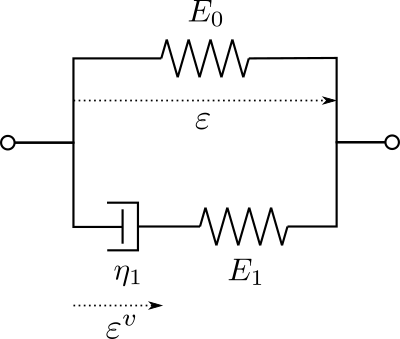

Linear viscoelasticity with JAX #
Objectives
This demo shows how to implement a nonlinear constitutive model, specifically a linear viscoelastic behavior. We rely on a manual Python-based implementation of the constitutive update at each quadrature point. To improve computational efficiency of evaluating a Python function while looping over all quadrature points, we leverage Just-In-Time compilation and automatic vectorization provided by the JAX library. In addition, consistent tangent operator are automatically derived using JAX Automatic Differentiation. \(\newcommand{\bsig}{\boldsymbol{\sigma}} \newcommand{\beps}{\boldsymbol{\varepsilon}} \newcommand{\bepsv}{\boldsymbol{\varepsilon}^\text{v}} \newcommand{\epsv}{\varepsilon^\text{v}} \newcommand{\sigv}{\sigma^\text{v}} \newcommand{\bv}{\boldsymbol{v}} \newcommand{\bI}{\boldsymbol{I}} \newcommand{\CC}{\mathbb{C}} \newcommand{\bT}{\boldsymbol{T}} \newcommand{\dOm}{\,\text{d}\Omega} \newcommand{\dS}{\,\text{d}S} \newcommand{\dt}{\,\text{d}t} \newcommand{\Neumann}{{\partial \Omega_\text{N}}} \newcommand{\Dirichlet}{{\partial \Omega_\text{D}}}\)
{kind=link}
Download sources
See also
For more details about JAX-based implementation of constitutive equations, we refer to Andrey’s Latyshev work at a-latyshev/dolfinx-external-operator.
Nonlinear constitutive models in FEniCS#
Although this tour considers linear viscoelasticity, we will treat the problem as involving a general nonlinear constitutive behavior. The latter will be implemented explicitly using Python, mimicking a generic black-box material library. In this case, the stress \(\bsig\) is evaluated as a nonlinear function of the total strain \(\beps\), yielding the following nonlinear variational problem:
Viscoelasticity involves solving for the time evolution of internal viscous strains \(\bepsv\). The constitutive relation is therefore implicitly defined via the evolution of this internal state variable. We collect in the set \(\mathcal{S}_n\) the state of the material at time \(t_n\), here we have \(\mathcal{S}_n = \{\bepsv_n\}\). The evaluation of the constitutive equation will be strain-driven in the sense that we provide a total strain increment \(\Delta \beps\) and the previous state at time \(t_n\) and the role of the constitutive model is to compute the new stress \(\bsig_{n+1}\) and the new state \(\mathcal{S}_{n+1}\):
See also
In the legacy FEniCS tour on Linear Viscoelasticity, we relied on a mixed formulation discretizing both the displacement and viscous strains at the structure level which was solved in a monolithic fashion. In the present approach, we voluntarily depart from this choice to focus on the implementation of a user-defined constitutive model.
Automation and high-performance computation using JAX#
The present approach will involve looping over all quadrature points to evaluate the constitutive behavior locally. This approach is obviously computationally inefficient due to the Python loop. To solve this issue, we will rely on the JAX library.

JAX is a Python library for accelerated (GPU) array computation and program transformation, designed for high-performance numerical computing and large-scale machine learning. Its key features of interest here involve:
Automatic Differentiation, see also the AutoDiff Cookbook
Just-In-Time compilation using
jax.jitAutomatic Vectorization using
jax.vmap
Linear viscoelastic behavior#
In this numerical tour, we consider a simple linear viscoelastic behavior, the Standard Linear Solid model, which encompasses the case of a Maxwell and a Kelvin-Voigt model. The formulation can also be quite easily extended to a generalized Maxwell model.
1D rheological formulation#
The Linear Standard Solid model consists of a spring of stiffness \(E_0\) in parallel to a Maxwell arm (spring of stiffness \(E_1\) in series with a dashpot of viscosity \(\eta_1\)).
{kind=link}
The uniaxial stress for this rheological model can be decomposed as the sum of a reversible and an irreversible stress:
whereas the evolution equation for the viscous internal strain is given by:
Introducing \(\tau=\eta_1/E_1\) the characteristic relaxation time, the viscous strain evolution equation can be written as:
or, equivalently, in terms of the viscous stress \(\sigv = E_1(\varepsilon-\epsv)\):
Note
The extension to a generalized Maxwell model with \(N\) internal strains is given by:
3D generalization#
For the 3D case, isotropic viscoelasticity is characterized by two elastic moduli (resp. two viscosities, or equivalently two relaxation times) for each spring (resp. dashpot) element of the 1D model. Here, we will restrict to a simpler case in which one modulus is common to all elements (similar Poisson ratio for all elements), that is:
where \(\mathbb{c} = \dfrac{\nu}{1-\nu^2}\mathbf{1}\otimes\mathbf{1} + \dfrac{1}{1+\nu}\mathbb{I}\) for plane stress with \(\mathbf{1}\) and \(\mathbb{I}\) being respectively the 2nd and 4th order identity tensors and \(\nu\) being the Poisson ratio.
Time-integration#
There exist many possible choices of discrete time integration for the linear viscoelastic evolution equations, see [Sorvari and Hämäläinen, 2010] for a review. In the following, we choose a semi-analytical method which considers the exact solution of the ODE (29) between time \(t_n\) and \(t_{n+1}=t_n+\Delta t\):
When approximating the right-hand side integral using a mid-point rule and a constant strain increment one obtains:
or, in terms of the viscous strain:
Implementation#
Problem position#
We consider here a 2D rectangular domain of dimensions \(L\times H\).
We first load the relevant modules and define the geometry and the displacement function space. For later use, we configure JAX to work with double-precision floats rather than the default single precision.
import numpy as np
import matplotlib.pyplot as plt
from mpi4py import MPI
import ufl
import basix
from dolfinx import mesh, fem, io
from dolfinx.common import Timer
from solvers import CustomLinearProblem, CustomNewtonSolver
import jax
import jax.numpy as jnp
jax.config.update("jax_enable_x64", True) # use double-precision
length, height = 0.1, 0.2
N = 20
domain = mesh.create_rectangle(
MPI.COMM_WORLD,
((0.0, 0.0), (length, height)),
(N, N),
ghost_mode=mesh.GhostMode.none,
)
gdim = domain.geometry.dim
deg_u = 2
shape = (gdim,)
V = fem.functionspace(domain, ("P", deg_u, shape))
Material properties corresponding to \(E_0=70\) GPa, \(\nu=0.3\), \(\eta_1=1\) GPa.s and \(\tau=0.05\) s are now defined and stored in a dictionary.
mat_prop = {"YoungModulus": 70e3, "PoissonRatio": 0.3, "eta": 1e3, "tau": 0.05}
The boundary conditions consist of symmetry planes on \(x=0\) and \(y=0\) and smooth contact with a plane with imposed vertical displacement on \(y=H\). The solution will therefore be homogeneous in the sample. We impose a constant vertical relaxation strain state \(\varepsilon_r=10^{-3}\).
V_ux, _ = V.sub(0).collapse()
V_uy, _ = V.sub(1).collapse()
left_dofs = fem.locate_dofs_geometrical(
(V.sub(0), V_ux), lambda x: np.isclose(x[0], 0.0)
)
bot_dofs = fem.locate_dofs_geometrical(
(V.sub(1), V_uy), lambda x: np.isclose(x[1], 0.0)
)
top_dofs = fem.locate_dofs_geometrical(
(V.sub(1), V_uy), lambda x: np.isclose(x[1], height)
)
uD_x0 = fem.Function(V_ux)
uD_y0 = fem.Function(V_uy)
uD_y = fem.Function(V_uy)
epsr = 1e-3
uD_y.vector.set(epsr * height)
bcs = [
fem.dirichletbc(uD_x0, left_dofs, V.sub(0)),
fem.dirichletbc(uD_y0, bot_dofs, V.sub(1)),
fem.dirichletbc(uD_y, top_dofs, V.sub(1)),
]
Quadrature functions#
Similarly to the Elasto-plastic analysis of a 2D von Mises material tour, we use Quadrature function spaces to define the stress and tangent operator to be used in the nonlinear variational formulation. We will also keep track of the viscous strain internal state variable in the same fashion. Since we work in 2D, we use a vectorial representation for the tensorial quantities consisting of the \(xx\), \(yy\), and \(xy\) components using the Mandel notation, see Isotropic and orthotropic plane stress elasticity .
deg_quad = 2 # quadrature degree for internal state variable representation
vdim = 3 # dimension of the vectorial representation of tensors
W0e = ufl.FiniteElement(
"Quadrature",
domain.ufl_cell(),
degree=deg_quad,
quad_scheme="default",
)
We = ufl.VectorElement(
"Quadrature",
domain.ufl_cell(),
degree=deg_quad,
dim=vdim,
quad_scheme="default",
)
WTe = ufl.TensorElement(
"Quadrature",
domain.ufl_cell(),
degree=deg_quad,
shape=(vdim, vdim),
quad_scheme="default",
)
W = fem.functionspace(domain, We)
WT = fem.functionspace(domain, WTe)
W0 = fem.functionspace(domain, W0e)
sig = fem.Function(W, name="Stress")
Ct = fem.Function(WT, name="Tangent_operator")
epsv = fem.Function(W, name="Viscous_strain")
epsv_old = fem.Function(W, name="Previous_viscous_strain")
eps_old = fem.Function(W, name="Previous_total_strain")
u = fem.Function(V, name="Total_displacement")
du = fem.Function(V, name="Iteration_correction")
v = ufl.TrialFunction(V)
u_ = ufl.TestFunction(V)
We now define the nonlinear residual and associated tangent bilinear form of the corresponding problem. Note that since the stress sig is stored as a vector, we use the Mandel representation for defining the (virtual) strain
def eps_Mandel(v):
e = ufl.sym(ufl.grad(v))
return ufl.as_tensor([e[0, 0], e[1, 1], np.sqrt(2) * e[0, 1]])
dx = ufl.Measure(
"dx",
domain=domain,
metadata={"quadrature_degree": deg_quad, "quadrature_scheme": "default"},
)
Residual = ufl.dot(eps_Mandel(u_), sig) * dx
tangent_form = ufl.dot(eps_Mandel(v), ufl.dot(Ct, eps_Mandel(u_))) * dx
Now, we extract the total number of quadrature points and define the fem.Expression corresponding to the total strain esp_Mandel(u) to perform the evaluation at all quadrature points.
basix_celltype = getattr(basix.CellType, domain.topology.cell_types[0].name)
quadrature_points, weights = basix.make_quadrature(basix_celltype, deg_quad)
map_c = domain.topology.index_map(domain.topology.dim)
num_cells = map_c.size_local + map_c.num_ghosts
cells = np.arange(0, num_cells, dtype=np.int32)
ngauss = num_cells * len(weights)
eps_expr = fem.Expression(eps_Mandel(u), quadrature_points)
def eval_at_quadrature_points(expression):
return expression.eval(domain, cells).reshape(ngauss, -1)
JAX implementation of the constitutive equation#
Local material constitutive behavior#
We are now ready to define the material constitutive equation at a single quadrature point. We define a function taking as arguments the total strain increment \(\Delta \beps\) (deps), the total \(\beps_n\) (eps_old) and viscous \(\bepsv_n\) (epsv_old) strains at the previous time step and the time increment \(\Delta t\) (dt). Strain-like quantities are here of shape (3,). The function simply implements the incremental approximate evolution equation (30). The function returns the new stress and new state of the material.
def local_constitutive_update(deps, eps_old, epsv_old, dt):
eps = eps_old + deps
E0 = mat_prop["YoungModulus"]
nu = mat_prop["PoissonRatio"]
eta = mat_prop["eta"]
tau = mat_prop["tau"]
E1 = eta / tau
c = 1 / (1 - nu**2) * jnp.array([[1, nu, 0], [nu, 1, 0], [0, 0, (1 - nu) / 2]])
C0 = E0 * c
C1 = E1 * c
epsv = (
eps + jnp.exp(-dt / tau) * (epsv_old - eps_old) - jnp.exp(-dt / 2 / tau) * deps
)
sig = C0 @ eps + C1 @ (eps - epsv)
state = (sig, epsv)
return sig, state
Tangent operator with Automatic Differentiation#
The constitutive equation should also return the algorithmic tangent operator \(\mathbf{C}_\text{tang} = \dfrac{\text{d} \bsig}{\text{d}\beps}\). Although the latter is extremely easy to compute in the present case, we show how to use JAX’s Automatic Differentiation capabilities to derive it automatically. We rely on the jax.jacfwd function which computes the jacobian of the local_constitutive_update function with respect to argument argnums=0, namely \(\Delta \beps\) here. The computation is done using forward-mode automatic differentiation, although here the tangent operator is of square shape so that there should be no significant difference with backward-mode. Finally, local_constitutive_update also returns state as an auxiliary output. This is specified explicitly with has_aux=True which indicates that the function returns a pair where the first element is considered the output of the mathematical function to be differentiated and the second element is auxiliary data. In this case, the output of jacfwd is (jacobian, state).
tangent_operator_and_state = jax.jacfwd(
local_constitutive_update, argnums=0, has_aux=True
)
JIT and automatic vectorization#
Finally, we will later have to call this function when looping over all quadrature points. Implementing such a loop in pure Python would obviously be extremely inefficient. An alternative would be to rewrite the local_constitutive_update function in vectorized form to work on a batch of strain-like quantities of shape (3,num_gauss) where num_gauss is the total number of Gauss points. Although this is not particularly difficult to implement in the present case, it requires reimplementing the function which is error-prone and cumbersome in general. Fortunately, JAX provides a way to automatically transform a function into an efficient vectorized form using jax.vmap. Applying this vectorization to the tangent_operator_and_state function, we simply specify that the batch will take place over axis 0 of the first 3 arguments but not the last one (dt is not batched). Finally, the resulting function is also jitted for efficient compilation and execution by the XLA compiler.
batched_constitutive_update = jax.jit(
jax.vmap(tangent_operator_and_state, in_axes=(0, 0, 0, None))
)
dolfinx constitutive update#
We are now ready to define a global constitutive update function on the dolfinx side. The latter will be called at each iteration of a global Newton method. It will first interpolate the current estimate of the total strain at all quadrature points. Arrays of strain increments and internal state variables are then passed to the batched_constitutive_update function which returns the batched tangent operator and state. Quadrature functions associated with the stress, tangent operator and new internal state variables are then updated.
def constitutive_update(u, sig, eps_old, epsv_old, epsv, dt):
with Timer("Constitutive update"):
eps_values = eval_at_quadrature_points(eps_expr)
eps_old_values = eps_old.x.array.reshape(ngauss, -1)
deps_values = eps_values - eps_old_values
epsv_old_values = epsv_old.x.array.reshape(ngauss, -1)
Ct_values, state = batched_constitutive_update(
deps_values, eps_old_values, epsv_old_values, dt
)
sig_values, epsv_new_values = state
sig.x.array[:] = sig_values.ravel()
epsv.x.array[:] = epsv_new_values.ravel()
Ct.x.array[:] = Ct_values.ravel()
Custom Newton solver#
We now define a custom Newton solver defined in the solvers.py module. The solver first relies on a CustomLinearProblem which is the same custom LinearProblem implementation which was described in the Elasto-plastic analysis of a 2D von Mises material demo. The latter works in particular with the iteration correction field du as the main unknown and solves the Newton system:
tangent_problem = CustomLinearProblem(
tangent_form,
-Residual,
u=du,
bcs=bcs,
petsc_options={
"ksp_type": "preonly",
"pc_type": "lu",
"pc_factor_mat_solver_type": "mumps",
},
)
Then, we define the CustomNewtonSolver which is a standard Newton method made for solving the previous system described in tangent_problem. The main difference is that such a solver implements a callback function CustomNewtonSolver.callback which takes as arguments the unknown field u and a list of other additional arguments. Here, the callback is provided to be the constitutive_update function defined earlier.
newton = CustomNewtonSolver(tangent_problem)
newton.callback = constitutive_update
Time-stepping loop#
We are now ready to define the time stepping loop and solve the nonlinear Newton system at each time increment. We will also monitor the average vertical strain and stress during the time evolution for postprocessing.
Nincr = 50
time_steps = np.linspace(0, 0.5, Nincr + 1)
results = np.zeros((Nincr + 1, 3))
# we set all functions to zero before entering the loop in case we would like to reexecute this code cell
sig.vector.set(0.0)
epsv.vector.set(0.0)
u.vector.set(0.0)
results = np.zeros((Nincr + 1, 2))
for i, dti in enumerate(np.diff(time_steps)):
state = (sig, eps_old, epsv_old, epsv, dti)
with Timer("Nonlinear solve"):
niter, converged = newton.solve(u, *state)
assert converged, "Solver did not converge."
# Update the previous total and viscous strain
eps_old.vector.array[:] = eval_at_quadrature_points(eps_expr).ravel()
epsv.vector.copy(epsv_old.vector)
# Post-processing
epsv_values = epsv.x.array.reshape(ngauss, -1)
sig_values = sig.x.array.reshape(ngauss, -1)
results[i + 1, 0] = np.mean(epsv_values[:, 1])
results[i + 1, 1] = np.mean(sig_values[:, 1])
WARNING:jax._src.xla_bridge:No GPU/TPU found, falling back to CPU. (Set TF_CPP_MIN_LOG_LEVEL=0 and rerun for more info.)
Results#
We check that the solution we obtain corresponds to the exact solution of the recovery test given by:
E0 = mat_prop["YoungModulus"]
eta = mat_prop["eta"]
tau = mat_prop["tau"]
E1 = eta / tau
plt.figure()
plt.plot(time_steps, epsr * (1 - np.exp(-time_steps / tau)), "-C3", label="Exact")
plt.plot(time_steps, results[:, 0], "ok", label="FEM")
plt.xlabel("Time $t$")
plt.ylabel(r"Viscous strain $\varepsilon_{yy}^\text{v}$")
plt.ylim(0, 1.2 * epsr)
plt.legend()
plt.show()
plt.figure()
plt.plot(
time_steps, E0 * epsr + E1 * epsr * np.exp(-time_steps / tau), "-C3", label="Exact"
)
plt.plot(time_steps, results[:, 1], "ok", label="FEM")
plt.xlabel("Time $t$")
plt.ylabel(r"Stress $\sigma_{yy}$ [MPa]")
plt.legend()
plt.show()


The FE solution matches indeed the exact solution as seen above. The instantaneous stress is \(\sigma_{yy}(t=0^+) = (E_0+E_1)\varepsilon_r = 90\) MPa whereas the long-term stress is given by \(\sigma_{yy}(t=\infty) = E_0\varepsilon_r = 70\) MPa.
Finally, we look at the timings to check that the call to the constitutive equation is negligible compared to the time spent solving global linear systems when problems are sufficiently large.
from dolfinx import common
common.list_timings(MPI.COMM_WORLD, [common.TimingType.wall])
[MPI_MAX] Summary of timings | reps wall avg wall tot
-------------------------------------------------------------------------------------------------------
Build dofmap data | 5 0.000195 0.000973
Build sparsity | 1 0.000227 0.000227
Compute dof reordering map | 5 0.000011 0.000055
Compute entities of dim = 1 | 1 0.000883 0.000883
Compute local part of mesh dual graph | 1 0.000784 0.000784
Compute local-to-local map | 1 0.000100 0.000100
Compute-local-to-global links for global/local adjacency list | 1 0.000015 0.000015
Constitutive update
| 149 0.001957 0.291532
Distribute row-wise data (scalable) | 1 0.000246 0.000246
GPS: create_level_structure | 2 0.000019 0.000039
Gibbs-Poole-Stockmeyer ordering | 1 0.000159 0.000159
Init dofmap from element dofmap | 5 0.000042 0.000209
Nonlinear solve | 50 0.047246 2.362288
SparsityPattern::finalize | 1 0.000285 0.000285
Topology: create | 1 0.003114 0.003114
Topology: determine shared index ownership | 1 0.001745 0.001745
Topology: determine vertex ownership groups (owned, undetermined, unowned) | 1 0.000244 0.000244
References#
Joonas Sorvari and Jari Hämäläinen. Time integration in linear viscoelasticity—a comparative study. Mechanics of Time-Dependent Materials, 14:307–328, 2010.